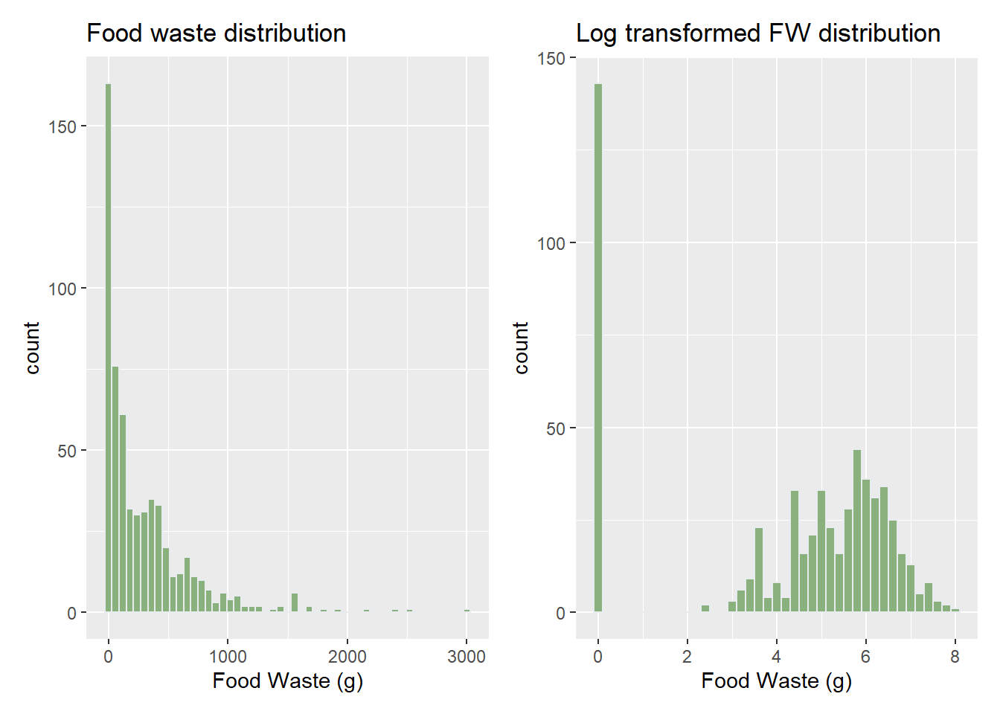
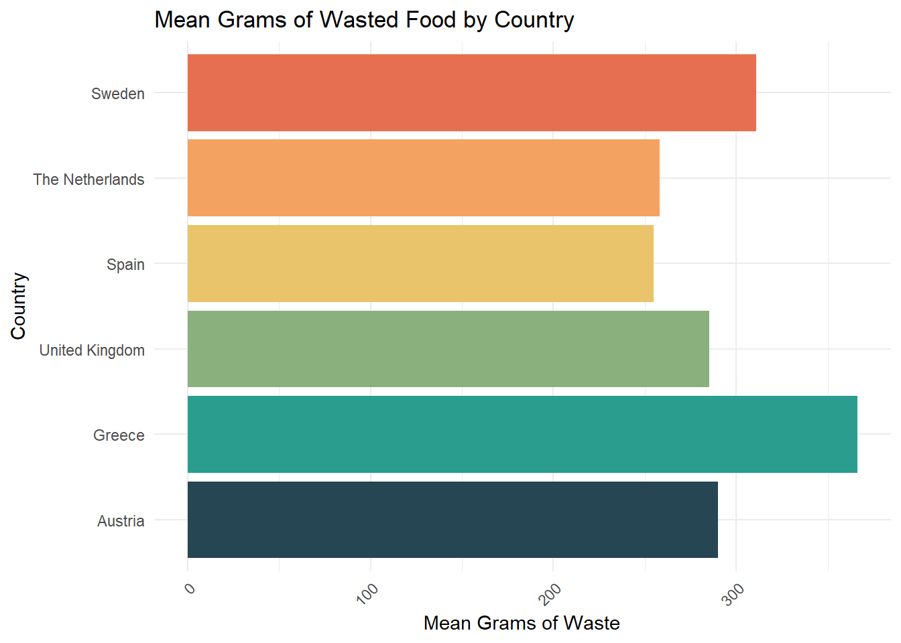
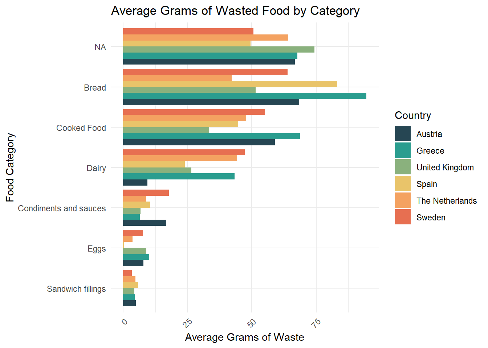
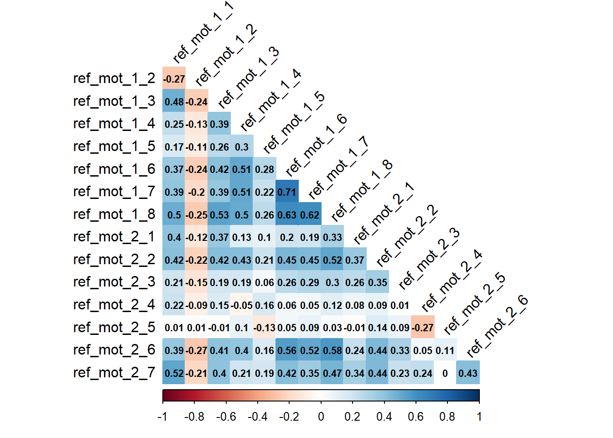
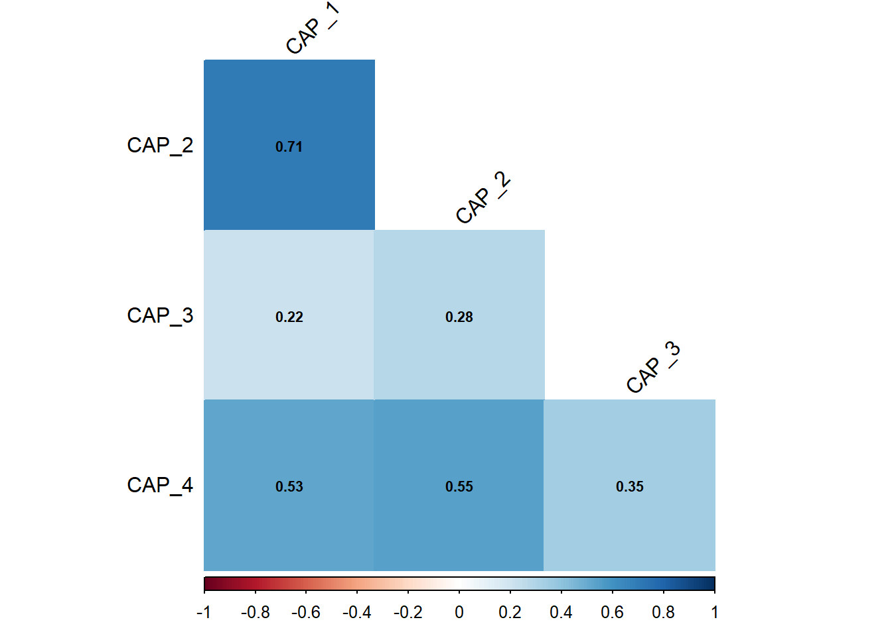
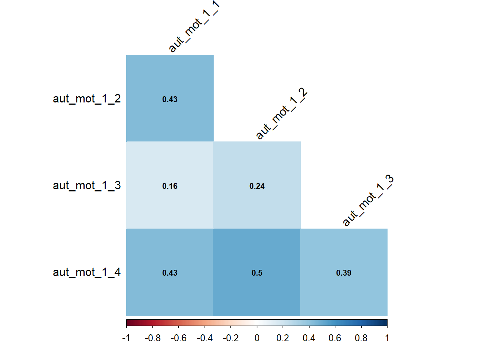

| Total (N=590) |
Austria (N=98) |
Greece (N=98) |
Netherlands (N=101) |
Spain (N=98) |
Sweden (N=94) |
United Kingdom (N=101) |
|
|---|---|---|---|---|---|---|---|
| Gender | |||||||
| Male | 296 (50.2%) | 45 (45.9%) | 59 (60.2%) | 58 (57.4%) | 55 (56.1%) | 51 (54.3%) | 28 (27.7%) |
| Female | 280 (47.5%) | 52 (53.1%) | 35 (35.7%) | 40 (39.6%) | 40 (40.8%) | 41 (43.6%) | 72 (71.3%) |
| Non-binary/third-gender | 10 (1.7%) | 1 (1.0%) | 2 (2.0%) | 3 (3.0%) | 3 (3.1%) | 1 (1.1%) | 0 (0%) |
| Prefer not to say | 4 (0.7%) | 0 (0%) | 2 (2.0%) | 0 (0%) | 0 (0%) | 1 (1.1%) | 1 (1.0%) |
| Age | |||||||
| Mean (SD) | 35.4 (11.8) | 30.2 (9.30) | 34.4 (10.8) | 31.5 (8.46) | 37.8 (10.9) | 34.3 (10.8) | 44.0 (14.1) |
| Median [Min, Max] | 33.0 [18.0, 78.0] | 28.0 [18.0, 69.0] | 32.5 [20.0, 67.0] | 29.0 [19.0, 67.0] | 35.0 [21.0, 74.0] | 31.5 [19.0, 67.0] | 41.0 [19.0, 78.0] |
| How many adults are part of your household? (aged 18 and older) | |||||||
| Mean (SD) | 2.12 (1.06) | 1.99 (0.914) | 2.29 (1.07) | 2.07 (1.40) | 2.23 (0.917) | 2.00 (0.880) | 2.13 (1.06) |
| Median [Min, Max] | 2.00 [0, 13.0] | 2.00 [0, 5.00] | 2.00 [0, 6.00] | 2.00 [0, 13.0] | 2.00 [1.00, 5.00] | 2.00 [0, 4.00] | 2.00 [1.00, 9.00] |
| How many children are part of your household? (aged under 18) | |||||||
| Mean (SD) | 0.372 (0.742) | 0.255 (0.631) | 0.340 (0.720) | 0.277 (0.618) | 0.459 (0.789) | 0.319 (0.691) | 0.580 (0.923) |
| Median [Min, Max] | 0 [0, 4.00] | 0 [0, 2.00] | 0 [0, 3.00] | 0 [0, 3.00] | 0 [0, 3.00] | 0 [0, 3.00] | 0 [0, 4.00] |
| Missing | 2 (0.3%) | 0 (0%) | 1 (1.0%) | 0 (0%) | 0 (0%) | 0 (0%) | 1 (1.0%) |
| Highest education level | |||||||
| No formal education | 0 (0%) | 0 (0%) | 0 (0%) | 0 (0%) | 0 (0%) | 0 (0%) | 0 (0%) |
| Primary education | 8 (1.4%) | 2 (2.0%) | 1 (1.0%) | 0 (0%) | 0 (0%) | 4 (4.3%) | 1 (1.0%) |
| Secondary education (GCSE) | 65 (11.0%) | 5 (5.1%) | 12 (12.2%) | 8 (7.9%) | 11 (11.2%) | 18 (19.1%) | 11 (10.9%) |
| College or vocational qualifications (e.g. BTEC, NVQ) | 97 (16.4%) | 36 (36.7%) | 12 (12.2%) | 13 (12.9%) | 10 (10.2%) | 16 (17.0%) | 10 (9.9%) |
| A-levels or equivalent | 56 (9.5%) | 3 (3.1%) | 8 (8.2%) | 27 (26.7%) | 2 (2.0%) | 5 (5.3%) | 11 (10.9%) |
| Bachelor's degree or equivalent | 209 (35.4%) | 27 (27.6%) | 42 (42.9%) | 27 (26.7%) | 41 (41.8%) | 25 (26.6%) | 47 (46.5%) |
| Master's degree or equivalent | 136 (23.1%) | 20 (20.4%) | 21 (21.4%) | 24 (23.8%) | 31 (31.6%) | 23 (24.5%) | 17 (16.8%) |
| Doctorate or equivalent | 19 (3.2%) | 5 (5.1%) | 2 (2.0%) | 2 (2.0%) | 3 (3.1%) | 3 (3.2%) | 4 (4.0%) |
| Employment status | |||||||
| Employed full-time | 274 (46.4%) | 43 (43.9%) | 55 (56.1%) | 41 (40.6%) | 51 (52.0%) | 43 (45.7%) | 41 (40.6%) |
| Employed part-time | 89 (15.1%) | 11 (11.2%) | 10 (10.2%) | 23 (22.8%) | 14 (14.3%) | 11 (11.7%) | 20 (19.8%) |
| Self employed | 49 (8.3%) | 9 (9.2%) | 7 (7.1%) | 9 (8.9%) | 10 (10.2%) | 6 (6.4%) | 8 (7.9%) |
| Unemployed looking for work | 40 (6.8%) | 4 (4.1%) | 5 (5.1%) | 7 (6.9%) | 9 (9.2%) | 12 (12.8%) | 3 (3.0%) |
| Unemployed not looking for work | 17 (2.9%) | 4 (4.1%) | 4 (4.1%) | 1 (1.0%) | 2 (2.0%) | 1 (1.1%) | 5 (5.0%) |
| Retired | 21 (3.6%) | 1 (1.0%) | 2 (2.0%) | 1 (1.0%) | 1 (1.0%) | 3 (3.2%) | 13 (12.9%) |
| Student | 83 (14.1%) | 26 (26.5%) | 13 (13.3%) | 17 (16.8%) | 10 (10.2%) | 14 (14.9%) | 3 (3.0%) |
| Inability to work | 11 (1.9%) | 0 (0%) | 2 (2.0%) | 1 (1.0%) | 0 (0%) | 2 (2.1%) | 6 (5.9%) |
| Other | 4 (0.7%) | 0 (0%) | 0 (0%) | 1 (1.0%) | 0 (0%) | 1 (1.1%) | 2 (2.0%) |
| Missing | 2 (0.3%) | 0 (0%) | 0 (0%) | 0 (0%) | 1 (1.0%) | 1 (1.1%) | 0 (0%) |
| Net monthly household income | |||||||
| Less than €1,000 | 73 (12.4%) | 12 (12.2%) | 21 (21.4%) | 14 (13.9%) | 13 (13.3%) | 6 (6.4%) | 7 (6.9%) |
| €1,000 - €1,999 | 134 (22.7%) | 14 (14.3%) | 42 (42.9%) | 17 (16.8%) | 24 (24.5%) | 16 (17.0%) | 21 (20.8%) |
| €2,000 - €2,999 | 131 (22.2%) | 22 (22.4%) | 17 (17.3%) | 24 (23.8%) | 29 (29.6%) | 17 (18.1%) | 22 (21.8%) |
| €3,000 - €3,999 | 100 (16.9%) | 22 (22.4%) | 6 (6.1%) | 15 (14.9%) | 18 (18.4%) | 21 (22.3%) | 18 (17.8%) |
| €4,000 - €4,999 | 47 (8.0%) | 11 (11.2%) | 1 (1.0%) | 15 (14.9%) | 3 (3.1%) | 8 (8.5%) | 9 (8.9%) |
| €5,000 - €5,999 | 33 (5.6%) | 5 (5.1%) | 1 (1.0%) | 7 (6.9%) | 4 (4.1%) | 11 (11.7%) | 5 (5.0%) |
| €6,000 - €6,999 | 20 (3.4%) | 4 (4.1%) | 2 (2.0%) | 3 (3.0%) | 3 (3.1%) | 6 (6.4%) | 2 (2.0%) |
| €7,000 - €7,999 | 10 (1.7%) | 1 (1.0%) | 0 (0%) | 2 (2.0%) | 0 (0%) | 5 (5.3%) | 2 (2.0%) |
| €8,000 - €8,999 | 7 (1.2%) | 2 (2.0%) | 1 (1.0%) | 0 (0%) | 2 (2.0%) | 2 (2.1%) | 0 (0%) |
| €9,000 - €9,999 | 5 (0.8%) | 1 (1.0%) | 1 (1.0%) | 0 (0%) | 1 (1.0%) | 0 (0%) | 2 (2.0%) |
| €10,000 - €14,999 | 10 (1.7%) | 3 (3.1%) | 3 (3.1%) | 3 (3.0%) | 0 (0%) | 0 (0%) | 1 (1.0%) |
| €15,000 or more | 18 (3.1%) | 1 (1.0%) | 3 (3.1%) | 1 (1.0%) | 1 (1.0%) | 1 (1.1%) | 11 (10.9%) |
| Missing | 2 (0.3%) | 0 (0%) | 0 (0%) | 0 (0%) | 0 (0%) | 1 (1.1%) | 1 (1.0%) |
| Total food waste (g) | |||||||
| Mean (SD) | 293 (389) | 281 (319) | 350 (437) | 267 (409) | 258 (393) | 291 (340) | 314 (420) |
| Median [Min, Max] | 150 [0, 3020] | 155 [0, 1710] | 208 [0, 2430] | 130 [0, 3020] | 150 [0, 2530] | 177 [0, 1680] | 150 [0, 2170] |
COM-B Food Waste Determinants
Below is some preliminary analysis of the data acquired from the questionnaire of COM-B determinants, habits and generated food waste.
Sample characteristics
Food waste descriptives

I will move forward with the log-transformed data.


COM-B Descriptives
Some items ( ref_mot_1_2 ) were negatively correlated with the total scale and
probably should be reversed.
To do this, run the function again with the 'check.keys=TRUE' option| M | SD | Median | n | Cronbach's Alpha | |
|---|---|---|---|---|---|
| Psychological Capability (5 items) | 5.28 | 0.91 | 5.40 | 588 | 0.71 |
| Physical Opportunity (2 items) | 5.72 | 0.97 | 6.00 | 589 | 0.62 |
| Social Opportunity (2 items) | 4.79 | 1.18 | 5.00 | 590 | 0.58 |
| Reflective Motivation (15 items) | 5.10 | 0.67 | 5.20 | 584 | 0.80 |
| Automatic Motivation (4 items) | 5.63 | 0.92 | 5.75 | 588 | 0.67 |

Scale reliability



correlation for social opportunity items (injunctive and descriptive norm) is 0.42 and for physical opportunity (time and physical resources) NA.
I will treat the physical opportunity and social opportunity items as separate constructs.
Fitting Tobit model
| term | estimate | std.error | statistic | p.value |
|---|---|---|---|---|
| (Intercept) | 10.77 | 0.80 | 13.40 | 0.00 |
| psycap | -0.21 | 0.14 | -1.49 | 0.14 |
| socopp | 0.11 | 0.09 | 1.26 | 0.21 |
| phyopp | -0.11 | 0.13 | -0.82 | 0.41 |
| refmot | -1.40 | 0.24 | -5.77 | 0.00 |
| autmot | 0.30 | 0.16 | 1.91 | 0.06 |
| term | estimate | std.error | statistic | p.value |
|---|---|---|---|---|
| (Intercept) | 1462.46 | 121.60 | 12.03 | 0.00 |
| psycap | -58.02 | 21.18 | -2.74 | 0.01 |
| socopp | 31.04 | 13.74 | 2.26 | 0.02 |
| phyopp | -21.24 | 19.52 | -1.09 | 0.28 |
| refmot | -248.54 | 36.82 | -6.75 | 0.00 |
| autmot | 67.43 | 24.09 | 2.80 | 0.01 |
| term | estimate | std.error | statistic | p.value |
|---|---|---|---|---|
| (Intercept) | 8.12 | 0.39 | 20.84 | 0.00 |
| psycap | -0.13 | 0.07 | -1.93 | 0.05 |
| socopp | 0.09 | 0.05 | 2.04 | 0.04 |
| phyopp | -0.06 | 0.06 | -0.98 | 0.33 |
| refmot | -0.56 | 0.12 | -4.76 | 0.00 |
| autmot | 0.13 | 0.08 | 1.70 | 0.09 |
| Estimate | Std. error | t value | Pr(> t) | |
|---|---|---|---|---|
| (Intercept) | 11.92 | 1.04 | 11.42 | 0.00 |
| psycap | -0.25 | 0.18 | -1.40 | 0.16 |
| socopp | 0.14 | 0.12 | 1.15 | 0.25 |
| phyopp | -0.14 | 0.17 | -0.81 | 0.42 |
| refmot | -1.72 | 0.32 | -5.45 | 0.00 |
| autmot | 0.38 | 0.21 | 1.82 | 0.07 |
| logSigma | 1.10 | 0.04 | 30.12 | 0.00 |
Logistic Regression
df$anywaste <- ifelse(!is.na(df$Q1_31), 0, 1)
logfitbyCountry <- df %>%
nest(data = -Country) %>%
mutate(tidied = map(map(data, ~ glm(anywaste ~ child + adult + age + psycap + socopp + phyopp + refmot + autmot, family= "binomial", data = .x)), tidy)) %>%
unnest(tidied) %>%
select(-data)
kable(logfitbyCountry, digits = 2) %>%
pack_rows(index = c("Spain" = 9, "UK" = 9, "The Netherlands" = 9, "Greece" = 9, "Sweden" = 9, "Austria" = 9))| Country | term | estimate | std.error | statistic | p.value |
|---|---|---|---|---|---|
| Spain | |||||
| Spain | (Intercept) | 6.76 | 3.02 | 2.24 | 0.03 |
| Spain | child | 0.12 | 0.30 | 0.41 | 0.68 |
| Spain | adult | 0.29 | 0.29 | 0.99 | 0.32 |
| Spain | age | -0.06 | 0.02 | -2.55 | 0.01 |
| Spain | psycap | 0.50 | 0.39 | 1.29 | 0.20 |
| Spain | socopp | -0.41 | 0.28 | -1.47 | 0.14 |
| Spain | phyopp | -0.23 | 0.36 | -0.63 | 0.53 |
| Spain | refmot | -1.22 | 0.72 | -1.70 | 0.09 |
| Spain | autmot | 0.51 | 0.40 | 1.29 | 0.20 |
| UK | |||||
| United Kingdom | (Intercept) | 8.35 | 2.91 | 2.87 | 0.00 |
| United Kingdom | child | 0.18 | 0.35 | 0.52 | 0.60 |
| United Kingdom | adult | -0.19 | 0.22 | -0.87 | 0.38 |
| United Kingdom | age | -0.01 | 0.02 | -0.42 | 0.67 |
| United Kingdom | psycap | -0.17 | 0.32 | -0.54 | 0.59 |
| United Kingdom | socopp | 0.26 | 0.24 | 1.07 | 0.28 |
| United Kingdom | phyopp | -0.12 | 0.41 | -0.29 | 0.77 |
| United Kingdom | refmot | -1.72 | 0.68 | -2.53 | 0.01 |
| United Kingdom | autmot | 0.49 | 0.51 | 0.97 | 0.33 |
| The Netherlands | |||||
| Netherlands | (Intercept) | 6.46 | 2.39 | 2.71 | 0.01 |
| Netherlands | child | 0.50 | 0.56 | 0.88 | 0.38 |
| Netherlands | adult | -0.18 | 0.18 | -1.02 | 0.31 |
| Netherlands | age | 0.02 | 0.03 | 0.72 | 0.47 |
| Netherlands | psycap | -0.45 | 0.43 | -1.05 | 0.30 |
| Netherlands | socopp | -0.16 | 0.25 | -0.63 | 0.53 |
| Netherlands | phyopp | -0.21 | 0.43 | -0.50 | 0.62 |
| Netherlands | refmot | -0.62 | 0.65 | -0.96 | 0.34 |
| Netherlands | autmot | 0.35 | 0.41 | 0.84 | 0.40 |
| Greece | |||||
| Greece | (Intercept) | 9.29 | 3.14 | 2.96 | 0.00 |
| Greece | child | -0.11 | 0.38 | -0.29 | 0.77 |
| Greece | adult | 0.14 | 0.27 | 0.53 | 0.59 |
| Greece | age | -0.02 | 0.03 | -0.82 | 0.41 |
| Greece | psycap | -0.14 | 0.42 | -0.35 | 0.73 |
| Greece | socopp | 0.13 | 0.23 | 0.59 | 0.56 |
| Greece | phyopp | -0.04 | 0.37 | -0.12 | 0.91 |
| Greece | refmot | -0.43 | 0.85 | -0.50 | 0.62 |
| Greece | autmot | -0.82 | 0.57 | -1.43 | 0.15 |
| Sweden | |||||
| Sweden | (Intercept) | 3.28 | 2.70 | 1.21 | 0.22 |
| Sweden | child | 1.80 | 1.05 | 1.72 | 0.09 |
| Sweden | adult | 0.68 | 0.41 | 1.66 | 0.10 |
| Sweden | age | -0.06 | 0.03 | -1.97 | 0.05 |
| Sweden | psycap | -0.20 | 0.43 | -0.46 | 0.65 |
| Sweden | socopp | 0.30 | 0.30 | 1.01 | 0.31 |
| Sweden | phyopp | 0.67 | 0.42 | 1.61 | 0.11 |
| Sweden | refmot | -1.40 | 0.83 | -1.68 | 0.09 |
| Sweden | autmot | 0.28 | 0.47 | 0.59 | 0.55 |
| Austria | |||||
| Austria | (Intercept) | 7.02 | 3.16 | 2.22 | 0.03 |
| Austria | child | 0.16 | 0.46 | 0.35 | 0.73 |
| Austria | adult | 0.29 | 0.37 | 0.79 | 0.43 |
| Austria | age | -0.02 | 0.03 | -0.63 | 0.53 |
| Austria | psycap | -0.25 | 0.47 | -0.53 | 0.59 |
| Austria | socopp | 0.13 | 0.28 | 0.46 | 0.65 |
| Austria | phyopp | 0.12 | 0.39 | 0.29 | 0.77 |
| Austria | refmot | -0.43 | 0.84 | -0.51 | 0.61 |
| Austria | autmot | -0.55 | 0.62 | -0.89 | 0.37 |
Linear Regression
fitbyCountry <- df %>%
nest(data = -Country) %>%
mutate(tidied = map(map(data, ~ lm(fw_total_log ~ child + adult + age + psycap + socopp + phyopp + refmot + autmot, data = .x)), tidy)) %>%
unnest(tidied) %>%
select(-data, -Country)
kable(fitbyCountry, digits = 2) %>%
pack_rows(index = c("Spain" = 9, "UK" = 9, "The Netherlands" = 9, "Greece" = 9, "Sweden" = 9, "Austria" = 9))| term | estimate | std.error | statistic | p.value |
|---|---|---|---|---|
| Spain | ||||
| (Intercept) | 12.49 | 2.85 | 4.38 | 0.00 |
| child | 0.25 | 0.33 | 0.76 | 0.45 |
| adult | 0.40 | 0.28 | 1.41 | 0.16 |
| age | -0.07 | 0.02 | -2.82 | 0.01 |
| psycap | 0.68 | 0.41 | 1.64 | 0.10 |
| socopp | -0.47 | 0.27 | -1.70 | 0.09 |
| phyopp | -0.36 | 0.32 | -1.13 | 0.26 |
| refmot | -1.97 | 0.67 | -2.93 | 0.00 |
| autmot | 0.71 | 0.41 | 1.75 | 0.08 |
| UK | ||||
| (Intercept) | 13.67 | 2.46 | 5.55 | 0.00 |
| child | 0.11 | 0.28 | 0.38 | 0.70 |
| adult | -0.20 | 0.23 | -0.87 | 0.39 |
| age | -0.02 | 0.02 | -1.12 | 0.27 |
| psycap | -0.13 | 0.32 | -0.40 | 0.69 |
| socopp | 0.30 | 0.23 | 1.29 | 0.20 |
| phyopp | -0.30 | 0.36 | -0.84 | 0.40 |
| refmot | -2.32 | 0.60 | -3.83 | 0.00 |
| autmot | 0.80 | 0.48 | 1.67 | 0.10 |
| The Netherlands | ||||
| (Intercept) | 8.60 | 1.63 | 5.29 | 0.00 |
| child | 0.67 | 0.40 | 1.65 | 0.10 |
| adult | -0.18 | 0.17 | -1.05 | 0.30 |
| age | 0.02 | 0.03 | 0.58 | 0.57 |
| psycap | -0.46 | 0.34 | -1.37 | 0.17 |
| socopp | -0.01 | 0.21 | -0.03 | 0.98 |
| phyopp | -0.14 | 0.31 | -0.47 | 0.64 |
| refmot | -0.82 | 0.51 | -1.61 | 0.11 |
| autmot | 0.46 | 0.34 | 1.33 | 0.19 |
| Greece | ||||
| (Intercept) | 10.98 | 2.43 | 4.52 | 0.00 |
| child | -0.03 | 0.39 | -0.09 | 0.93 |
| adult | 0.30 | 0.24 | 1.25 | 0.21 |
| age | -0.01 | 0.03 | -0.52 | 0.61 |
| psycap | -0.25 | 0.39 | -0.65 | 0.52 |
| socopp | 0.05 | 0.22 | 0.23 | 0.82 |
| phyopp | 0.00 | 0.33 | 0.00 | 1.00 |
| refmot | -0.63 | 0.76 | -0.83 | 0.41 |
| autmot | -0.43 | 0.45 | -0.96 | 0.34 |
| Sweden | ||||
| (Intercept) | 8.42 | 2.14 | 3.93 | 0.00 |
| child | 0.80 | 0.36 | 2.24 | 0.03 |
| adult | 0.45 | 0.27 | 1.64 | 0.10 |
| age | -0.03 | 0.02 | -1.41 | 0.16 |
| psycap | -0.37 | 0.36 | -1.02 | 0.31 |
| socopp | 0.24 | 0.24 | 1.03 | 0.31 |
| phyopp | 0.71 | 0.32 | 2.20 | 0.03 |
| refmot | -1.74 | 0.57 | -3.03 | 0.00 |
| autmot | 0.22 | 0.35 | 0.64 | 0.53 |
| Austria | ||||
| (Intercept) | 9.56 | 2.26 | 4.23 | 0.00 |
| child | 0.38 | 0.38 | 1.00 | 0.32 |
| adult | 0.31 | 0.27 | 1.17 | 0.25 |
| age | 0.00 | 0.03 | -0.13 | 0.90 |
| psycap | -0.29 | 0.35 | -0.83 | 0.41 |
| socopp | 0.19 | 0.23 | 0.83 | 0.41 |
| phyopp | -0.06 | 0.31 | -0.20 | 0.84 |
| refmot | -0.54 | 0.64 | -0.85 | 0.40 |
| autmot | -0.36 | 0.42 | -0.84 | 0.40 |